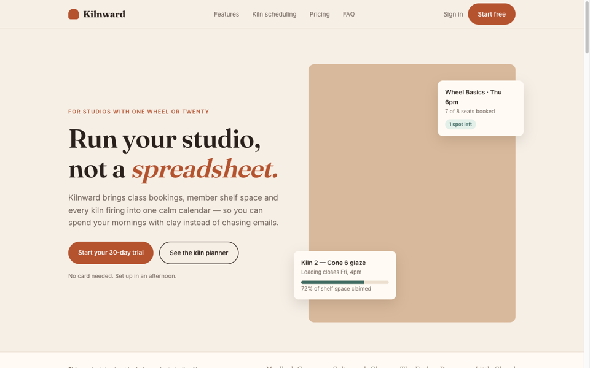
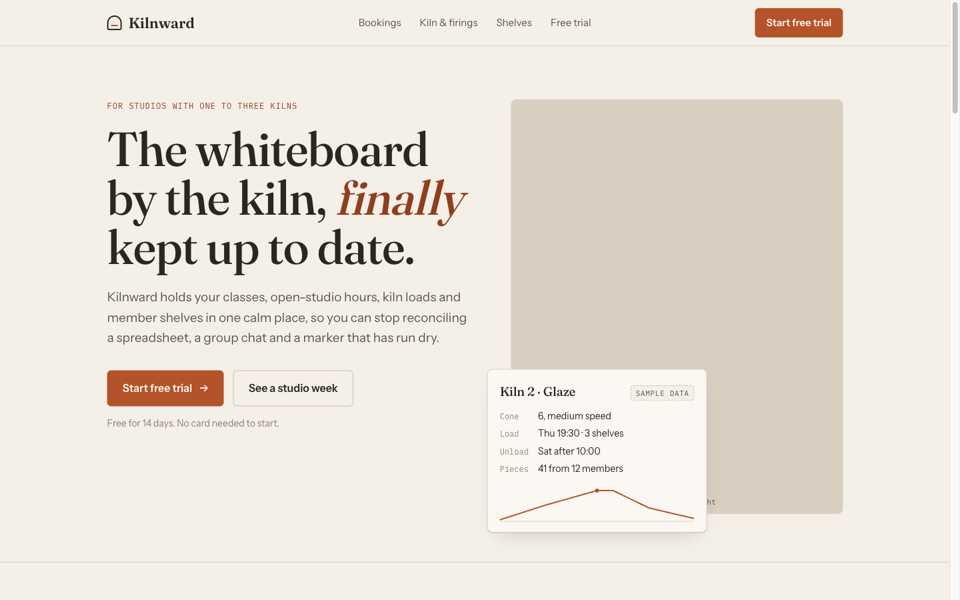
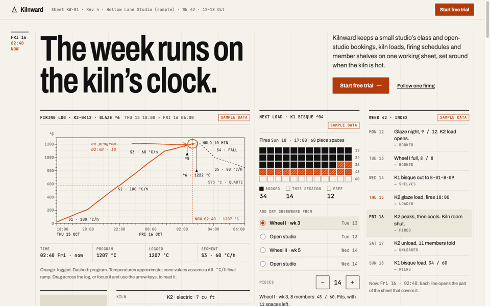

One brief for Kilnward, a made-up booking and kiln-scheduling app for small ceramic studios, built by plain Claude from a one-line prompt, by plain Claude from the full brief, and through the unslop process.
Kilnward is fictional, and every name, schedule and figure on these pages is sample data. For this demo Claude wrote the brief and guardrails and made every pick, at the plugin author's request. In a normal run you write the guardrails and make every pick yourself.

"Make a landing page for Kilnward, a booking and kiln-scheduling app for small pottery studios." Unedited.

The complete brief, including the Always and Never guardrails, with no references and no process. Unedited.

The same brief through references, ten directions, three iterations and a final build.
Every stage stopped for a pick. Each output below is the real file from the run; the only later edit was a contrast fix and one link label on Open Studio (impeccable), recorded in the decision log.
impeccable and tasteskill installed into a fresh project with their documented commands. A brief with the intent, guardrails and goal.
44 Dribbble shots, grouped by visual language into 8 groups. Five were shortlisted. The screenshots belong to their designers, so the published gallery links to each original instead of copying it.
Five directions, each built once with impeccable and once with tasteskill: Shelf & Glaze, The Studio Journal, Kiln Log, Studio Noticeboard and Open Studio. Kiln Log won.
Kiln room wall, One firing start to finish, and The control sheet, each taking the winner somewhere different.
Composed from picks across the three iterations, with a written design spec and a log of every decision.
claude plugin marketplace add amratansh12/unslop claude plugin install unslop@unslopView unslop on GitHub